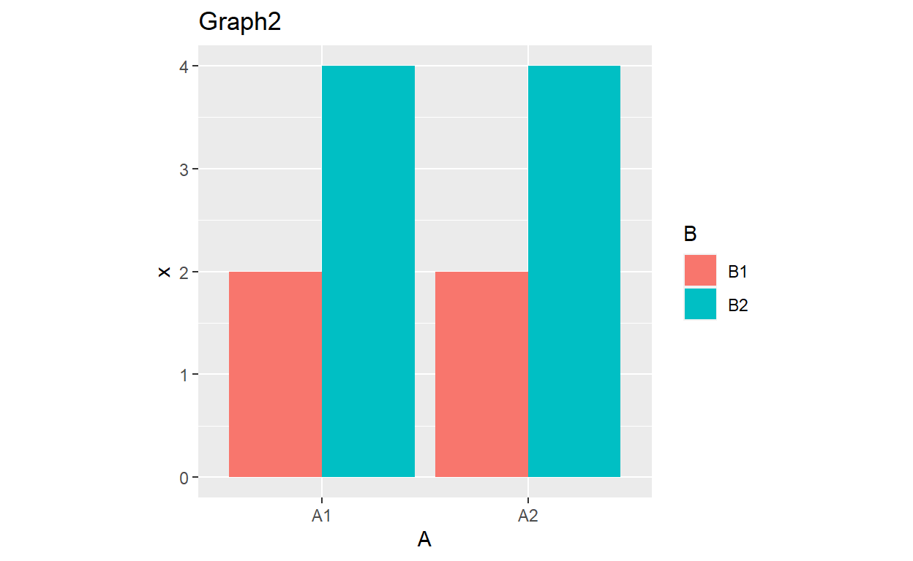
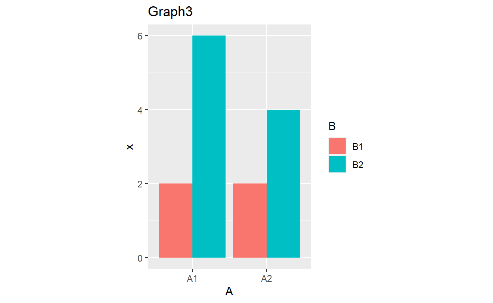
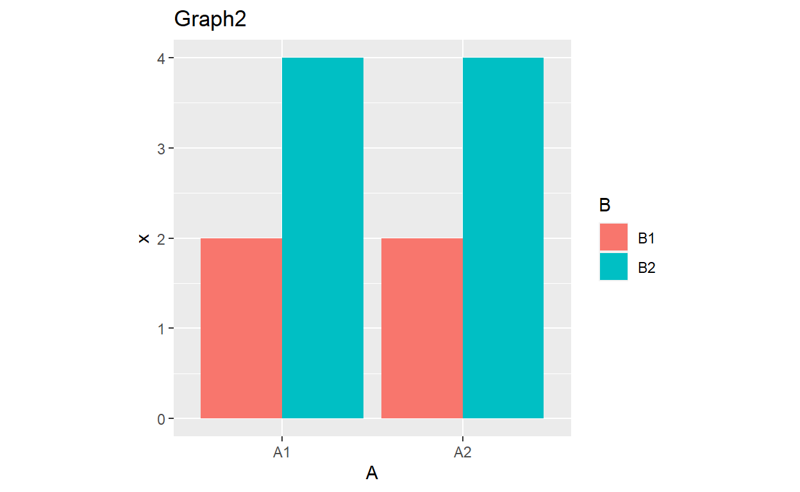
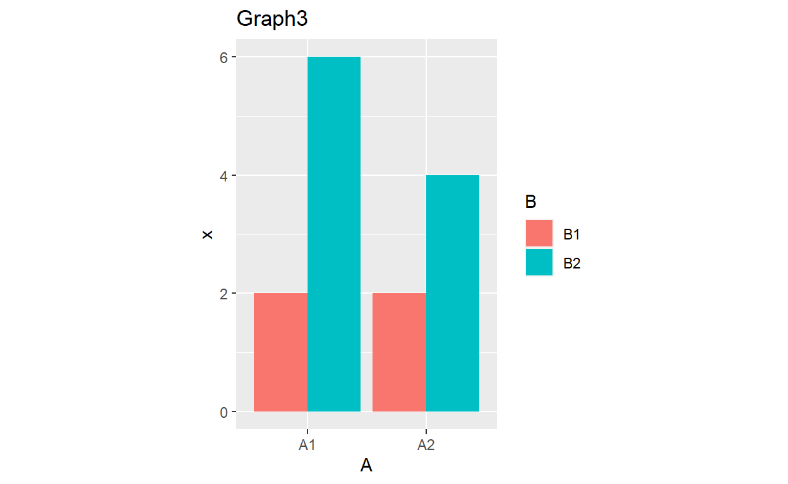
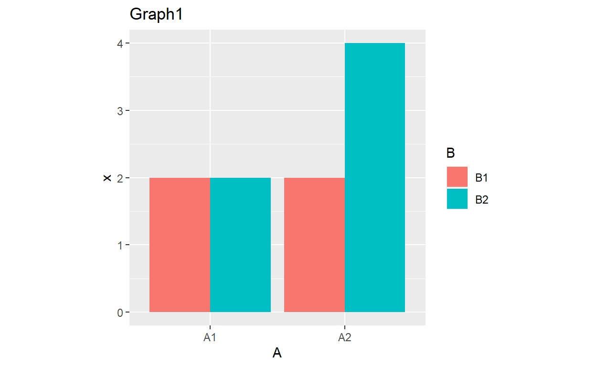
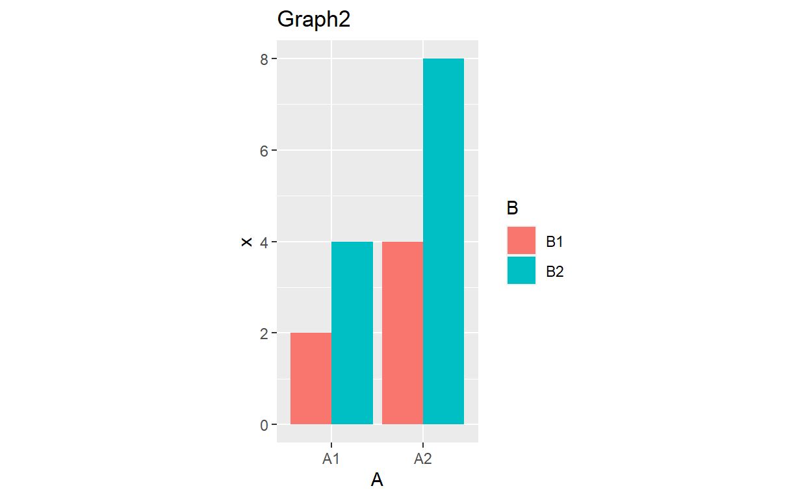
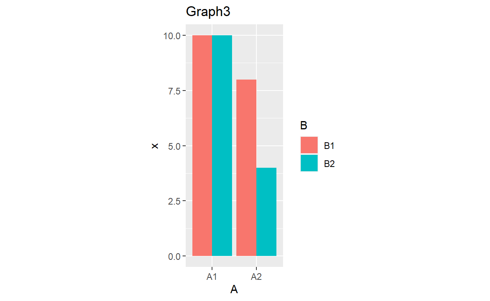
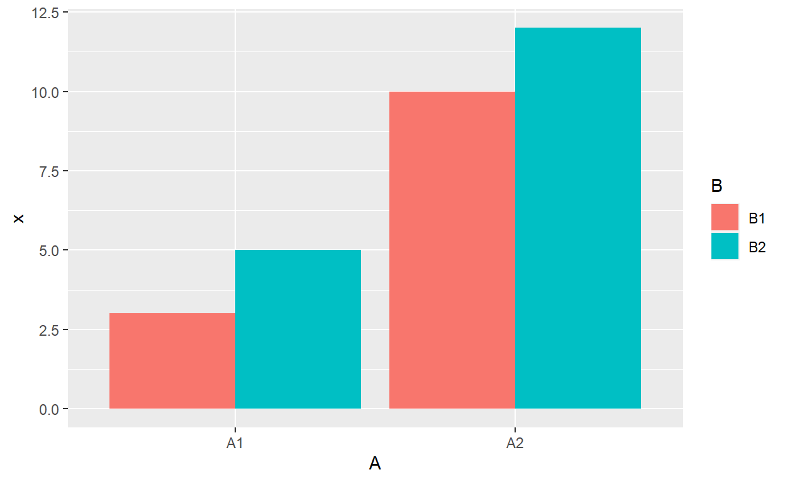
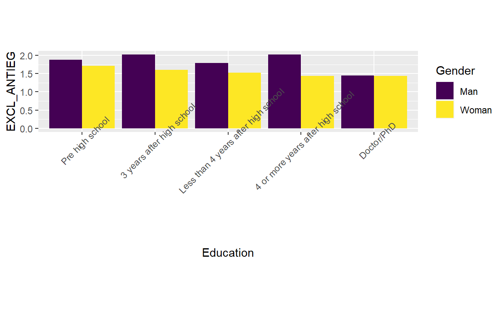

Two Factor ANOVA
Overview
This tutorial focuses on the two factor ANOVA with a particular emphasis on interpreting interactions. The tutorial also includes a brief section on NHST with correlation/regression designs.
The PowerPoint slides for the presentation in the videos are on Canvas if you want a standalone copy.
The videos (as well as others) can also be found on my YouTube channel https://www.youtube.com/channel/UC5kDZTyHZlgSgSEa3YQXOi
Learning Objectives
Define the different types of Sums of Square in the two factor context
Explain the conditions for applying the Two Factor ANOVA
Compute Sums of Squares, degrees of freedom, Mean Square, and F
Given a problem, define the null and alternative hypotheses
Apply the above procedures to making decisions about null hypotheses
Describe and calculate partial eta-squared as a measure of effect size
Graph and interpret interaction effects
Use R to compute ANOVA and eta-squared
Excitedly tell your parents about interaction effects
Define and perform analyses testing hypothesis in correlation/regression
Data
denial2 is the datafile used in exercises. These data examine relationships between climate denial and a variety of other beliefs.
Jylhä, K. M., & Hellmer, K. (in press). Right-wing populism and climate change denial: The roles of exclusionary and anti-egalitarian preferences, conservative ideology, and antiestablishment attitudes. Analyses of Social Issues and Public Policy. https://doi.org/10.1111/asap.12203
The datafile includes the variables CCD (Climate Change denial), ANTIESTABL (Anti Establishment Beliefs), EXCL_ANTIEG (anti egalitarian preferences), TRADVALUE (traditional values), OPENNESS (openness to new experiences), PSEUDOSCI (pseudoscience beliefs), and AGREEABL (agreeableness), AGE (age in years), Gender (two categories), Education (5 categories, and ed (education split into college grads vs. non grads)
culture is a datafile used in examples. It contains a variable indicating condition (Condition), region (Region) and one indicating testosterone increase (Testosterone).
Packages
This tutorial uses the following new packages:
lsrfor effect sizescarfor ANOVA computationsggplot2for graphing
Video 1 Introduction to ANOVA
Video 1: Introduction
Quiz 1
Video 2 Interpreting Interactions
Quiz
 

Video 3 Calculations
Exercise Calculations
\(\huge SS_{Total}=\Sigma(x-\bar{x}_t)^2\)
\(\huge SS_{Between}=\Sigma n_{cell}(\bar{x}_{cell}-\bar{x}_t)^2\)
\(\huge SS_{Within}=\Sigma(x-\bar{x}_{cell})^2\)
\(\huge SS_{A}=\Sigma n_{A}(\bar{x}_{A}-\bar{x}_t)^2\) \(\huge SS_{B}=\Sigma n_{B}(\bar{x}_{B}-\bar{x}_t)^2\) \(\huge SS_{AxB}=SS_{BG}-SS_{A}-SS_{B}\)
\(\huge MS_{Between}=\frac{SS_{Between}}{df_{Between}}\)
\(\huge MS_{Within}=\frac{SS_{Within}}{df_{Within}}\)
\(\huge F = \frac{MS_{Between}}{MS_{Within}}\)
\(\huge \eta^2=\frac{SS_{Between}}{SS_{Total}}\)
\(\huge MS_{A}=\frac{SS_{A}}{df_{A}}\)
\(\huge df_{A}=A-1\) \(\huge F_{A}=\frac{MS_A}{df_A}\) \(\huge MS_{B}=\frac{SS_{B}}{df_{B}}\)
\(\huge df_{B}=B-1\) \(\huge F_{B}=\frac{MS_B}{df_B}\) \(\huge MS_{AxB}=\frac{SS_{AxB}}{df_{AxB}}\)
\(\huge df_{AxB}=(A-1)(B-1)\) \(\huge F_{AxB}=\frac{MS_{AxB}}{df_{AxB}}\)
\(\huge MS_{Within}=\frac{SS_{Within}}{df_{Within}}\)
\(\huge F = \frac{MS_{Between}}{MS_{Within}}\)
\(\huge \eta^2_A=\frac{SS_{A}}{SS_{Total}-SS_B-SS_{AxB}}\) \(\huge \eta^2_B=\frac{SS_{B}}{SS_{Total}-SS_A-SS_{AxB}}\) \(\huge \eta^2_{AxB}=\frac{SS_{AxB}}{SS_{Total}-SS_A-SS_{B}}\)
| A | B | x |
|---|---|---|
| A1 | B1 | 2 |
| A1 | B2 | 4 |
| A1 | B1 | 4 |
| A1 | B2 | 6 |
| A2 | B1 | 8 |
| A2 | B2 | 10 |
| A2 | B1 | 12 |
| A2 | B2 | 14 |
Video 4 ANOVA Revisting Main Effects
Quiz Main Effects and Interactions

Video 5: Factorial ANOVA in R
Factorial ANOVA in R
Factorial ANOVA in R looks a lot like one factor ANOVA, but there is some extra code to get the correct sums of squares. There are numerous types of SS and ways to conduct ANOVA but only one type that is relevant to situations when we test interactions
| A | B | x |
|---|---|---|
| A1 | B1 | 2 |
| A1 | B2 | 4 |
| A1 | B1 | 4 |
| A1 | B2 | 6 |
| A2 | B1 | 8 |
| A2 | B2 | 10 |
| A2 | B1 | 12 |
| A2 | B2 | 14 |
The first line of code sets the correct contrast.
options(contrasts=c(“contr.helmert”, “contr.poly”))
The second conducts the ANOVA, writing it to an object (anova2F).
anova2F<-lm(Testosterone~Region+Condition+Region:Condition, data=culture)
The third line uses the car package to produce the correct sums of squares.
car::Anova(anova2F, type = 3)
The final line produces the effect size using lsr.
lsr::EtaSquared(anova2F)
## eta.sq eta.sq.part
## A 7.777778e-01 8.305085e-01
## B 6.349206e-02 2.857143e-01
## A:B 2.819614e-17 1.776357e-16Exercise
Using the denial2 data, predict Anti-Egalitarian Preferences (EXCL_ANTIEG) from Education and Gender.
options(contrasts=c("contr.helmert", "contr.poly"))
ex2<-lm(EXCL_ANTIEG~Education*Gender, data=denial2)
car::Anova(ex2, type = 3)
lsr::etaSquared(ex2)Graphing with ggplot2
Before we interpret our effects, it is useful to view them graphically. We will use R’s most popular graphing package ggplot2to accomplish this. The code for ggplot2 may seem complicated at first, but you can easily adapt it to new problems.
The first line creates our graphing object. xx represents our data file. aes stands for “aestetics” - this is what will be represented on the x and y axis. x is = one factor, y = outcome variable, fill = the other factor. Generally, fill should be the factor with the fewest levels (not an issue here as they both have two). The second line just defines what we are graphing and does not need to be modified is only needed for the tutorial to make stuff fit on screen)
bars <- ggplot(xx, aes(x=A, y=x, fill=B)) bars + stat_summary(fun = mean, geom=“bar”, position=“dodge”)

Exercise
Adapt the ggplot2 code to make a graph for your analysis.
bars <- ggplot(denial2, aes(x=Education, y=EXCL_ANTIEG, fill=Gender))
bars + stat_summary(fun = mean, geom="bar", position="dodge")+coord_fixed(ratio = 0.5)One thing you might notice is that the labels are overlapping on the x-axis. We can add the command below to our code to fix that.
- theme(axis.text.x = element_text(angle = 45))
give it a shot below
bars <- ggplot(denial2, aes(x=Education, y=EXCL_ANTIEG, fill=Gender))
bars + stat_summary(fun = mean, geom="bar", position="dodge") + theme(axis.text.x = element_text(angle = 45))+coord_fixed(ratio = 0.5)Descriptive Statistics
One last useful piece are descriptive statistics. As before the tapply command can deliver those
## B1 B2
## A1 3 5
## A2 10 12## B1 B2
## A1 1.414214 1.414214
## A2 2.828427 2.828427Adapt the code above to produce descriptive statistics for your analyses.
tapply(denial2$EXCL_ANTIEG,list(denial2$Gender,denial2$Education),mean)
tapply(denial2$EXCL_ANTIEG,list(denial2$Gender,denial2$Education),sd)Quiz
## eta.sq eta.sq.part
## Education 0.009520621 0.010268921
## Gender 0.065199582 0.066340061
## Education:Gender 0.008003464 0.008646668
## Pre high school 3 years after high school
## Man 1.875000 2.023186
## Woman 1.710526 1.597782
## Less than 4 years after high school 4 or more years after high school
## Man 1.788095 2.019511
## Woman 1.527561 1.435674
## Doctor/PhD
## Man 1.443182
## Woman 1.437500## Pre high school 3 years after high school
## Man 0.8277054 0.8791810
## Woman 0.6420678 0.6569578
## Less than 4 years after high school 4 or more years after high school
## Man 0.6972543 0.8769733
## Woman 0.6108732 0.5526861
## Doctor/PhD
## Man 0.3462461
## Woman 0.4589094Video 6: Examples from the Literature
APA Style Write-up
In this section we will review how to present findings in APA style.
## eta.sq eta.sq.part
## Education 0.009520621 0.010268921
## Gender 0.065199582 0.066340061
## Education:Gender 0.008003464 0.008646668## Pre high school 3 years after high school
## Man 1.875000 2.023186
## Woman 1.710526 1.597782
## Less than 4 years after high school 4 or more years after high school
## Man 1.788095 2.019511
## Woman 1.527561 1.435674
## Doctor/PhD
## Man 1.443182
## Woman 1.437500## Pre high school 3 years after high school
## Man 0.8277054 0.8791810
## Woman 0.6420678 0.6569578
## Less than 4 years after high school 4 or more years after high school
## Man 0.6972543 0.8769733
## Woman 0.6108732 0.5526861
## Doctor/PhD
## Man 0.3462461
## Woman 0.4589094## Man Woman
## 1.934757 1.538939## Man Woman
## 0.8257408 0.6188329## Pre high school 3 years after high school
## 1.754808 1.723754
## Less than 4 years after high school 4 or more years after high school
## 1.606422 1.605175
## Doctor/PhD
## 1.439286## Pre high school 3 years after high school
## 0.6922016 0.7545963
## Less than 4 years after high school 4 or more years after high school
## 0.6486239 0.7132817
## Doctor/PhD
## 0.4215817## Pre high school 3 years after high school
## 1.754808 1.723754
## Less than 4 years after high school 4 or more years after high school
## 1.606422 1.605175
## Doctor/PhD
## 1.439286## Pre high school 3 years after high school
## 0.6922016 0.7545963
## Less than 4 years after high school 4 or more years after high school
## 0.6486239 0.7132817
## Doctor/PhD
## 0.4215817A 5x2 between subjects ANOVA examined the relationship between education and gender on anti-egalitarian beliefs. Men (M = 1.93, S = 0.83) were more likely to endorse anti-egalitarian beliefs than women (M = 1.54, S = 0.62), F(1,1540)=17.06, p<.001, partial \(\eta^2\) = .066. Education tended to reduce anti-egalitarian beliefs, F(4,1540)=4.34,p=.002, partial \(\eta^2\) = .010. Those without a high school education (M=1.75, S=.069) and three years after high school (M=1.72, S=.069) produced similar means. Those with less than four years after high school (M=1.61, S=.069), and four or more years after high school (M=1.60, S=.065) indicated lessened endorsement whereas those with doctoral degrees,(M=1.44, S=.042) indicated the least endorsement of anti-egalitarian beliefs.
These findings are qualified by a significant interaction wherein men at all levels of education, except the doctoral level, endorsed greater anti egalitarian beliefs, F(1,1540)=3.36, p=.010, partial \(\eta^2\) = .009. (Note: I would likely add a table here with the means or present the graph as well)
Video 7: Revisiting Correlation and Regression
Correlation/Regression Quiz
Recall these analyses from earlier in the semester.
##
## Pearson's product-moment correlation
##
## data: BLM$NegCon and BLM$blm
## t = -1.6814, df = 271, p-value = 0.09383
## alternative hypothesis: true correlation is not equal to 0
## 95 percent confidence interval:
## -0.21770102 0.01731601
## sample estimates:
## cor
## -0.10161##
## Call:
## lm(formula = PSEUDOSCI ~ ANTIESTABL + TRADVALUE + OPENNESS +
## AGREEABL, data = denial)
##
## Residuals:
## Min 1Q Median 3Q Max
## -2.0346 -0.6413 -0.0536 0.5499 3.4141
##
## Coefficients:
## Estimate Std. Error t value Pr(>|t|)
## (Intercept) 0.37253 0.19921 1.870 0.0617 .
## ANTIESTABL 0.16873 0.02386 7.073 2.28e-12 ***
## TRADVALUE 0.20987 0.02339 8.972 < 2e-16 ***
## OPENNESS 0.03207 0.03284 0.976 0.3290
## AGREEABL 0.20932 0.03824 5.474 5.12e-08 ***
## ---
## Signif. codes: 0 '***' 0.001 '**' 0.01 '*' 0.05 '.' 0.1 ' ' 1
##
## Residual standard error: 0.8325 on 1578 degrees of freedom
## Multiple R-squared: 0.09926, Adjusted R-squared: 0.09698
## F-statistic: 43.47 on 4 and 1578 DF, p-value: < 2.2e-16Quiz
Congratulations! You’ve reached the end of the tutorial. Here is what you need to do to obtain credit. Take the completion token below and copy it. Open Canvas as go to the assignment called ANOVA 1 Factor tutorial. Enter your token!
## [1] "LuSuh"